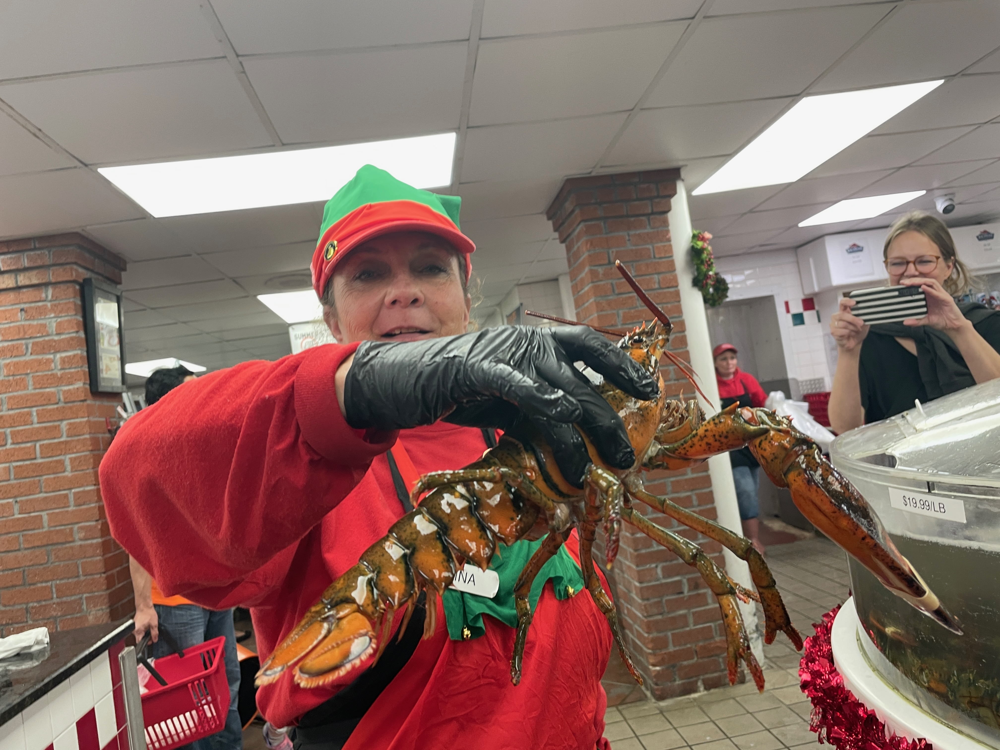
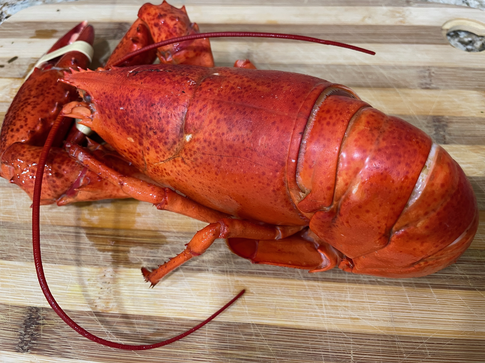
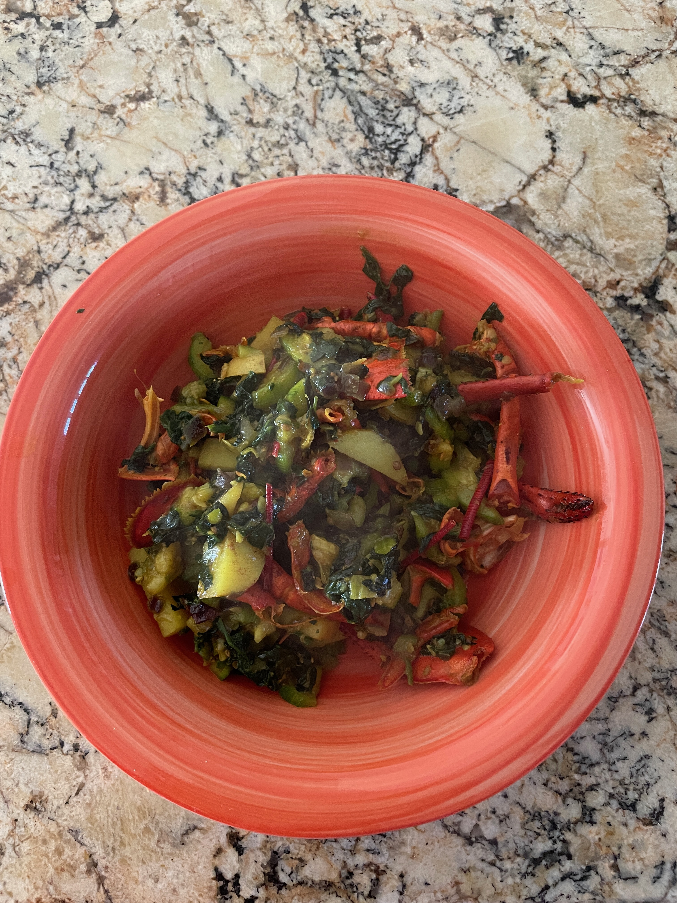

Recipe: Chorchori with lobster tail and claws

Live lobster -- dangerous claws!

Steamed Lobster

Bengali style lobster chorchori with claws and tails
Recipe Card
1. Cut the vegetables (pumpkin, spinach (or pui sag), potatoes, green chillies, ginger) and keep aside.
2. Cut, clean, and steam the lobster, including tails and claws. Extract the meat from inside the claws if appropriate.
3. In a wok, heat oil, splutter panch phoron, stir fry green chillies and ginger.
4. Add in the cut vegetables and steamed claws, tail, and residual meat from the lobster. Let all the vegetables cook
for about 15-20 minutes, carefully ensuring they are not mushy.
5. Top off with garam masala.